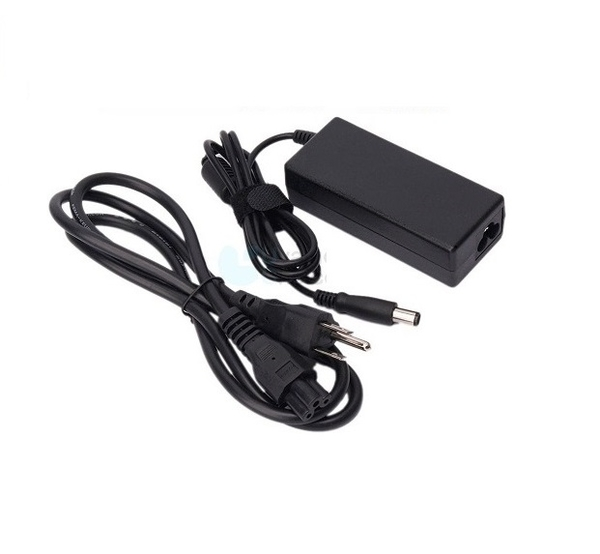

筆電購買相關
-
CPU
中央處理器（CPU）是一種電腦硬體，負責處理計算機系統中的指令。它是計算機系統中的主要晶片之一，並控制電腦的所有運算和操作。
-
顯示卡
顯示卡是電腦硬體，處理和渲染圖像和影片，提供更好的視覺效果和遊戲性能。
-
記憶體
記憶體是電腦的核心硬體之一，儲存運行中的數據和程式碼，快速存取並交換數據，是電腦系統的重要組件。
-
SSD硬碟
硬碟是電腦的儲存裝置之一，用於儲存數據和文件，包括作業系統、程式和媒體檔案等，以便快速訪問和保存。
-
螢幕大小
筆電螢幕大小是指顯示器對角線的長度，以英寸為單位。較小的螢幕適合移動和攜帶，較大的螢幕有更好的視覺體驗。
-
螢幕面板
筆電螢幕面板是顯示器的顯示技術，影響顯示品質和視角。主要面板類型包括IPS、TN和VA，每種面板技術有其優缺點和應用場景。
-
筆電重量
筆電重量是指筆電本體的重量，通常以公斤或磅為單位。輕量化的筆電更便於攜帶和移動，但可能在性能和電池壽命上做出妥協。
-

筆電瓦數
筆電瓦數是指筆電使用的電源功率，通常以瓦特（W）為單位。高瓦數的筆電通常具有更高的處理能力和性能，但也會消耗更多的電池壽命。